If your organization is using TestRail to manage test cases and collect all test results in one place, you might need to upload the Cypress test results too. The existing plugin cypress-testrail-reporter I found is broken in a variety of ways, and does not support uploading test from parallel test runs. Thus I wrote my own plugin called cypress-testrail-simple which supports TestRail when Cypress runs in parallel mode. This blog post teaches you how to use the cypress-testrail-simple plugin with GitHub Actions and CircleCI workflows.
- TestRail project
- cypress-testrail-simple
- GitHub Actions
- CircleCI
- Update 1: pick the test cases from spec files
TestRail project
To demo the TestRail and Cypress work, I have created a new repository bahmutov/test-rail-example and a new TestRail project also named "test-rail-example".
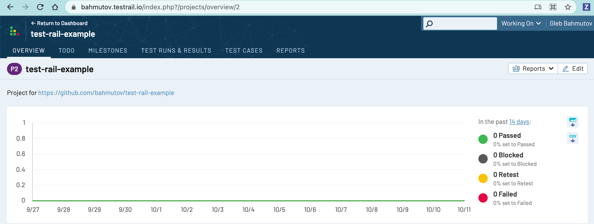
Note my server TestRail URL is "https://bahmutov.testrail.io", and my project ID is 2. The prefix "P" is just for show.
Test cases
Before sending test results, we need to create test cases in our project. I have created 3 test cases shown in the list.
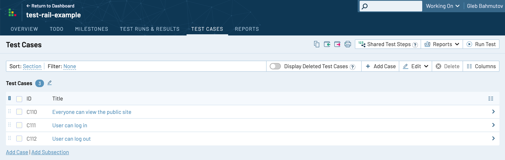
Note: TestRail project keeps incrementing the ID shared between the test results and the test cases across all projects for the same account. Thus creating three test cases in a row gave them IDs C110, C111, and C112 because I already had a vew test runs in the other projects. The C prefix is just for the viewers, when we update a test case via API calls we will use the numeric part, like 110, 111, and 112.
Authentication
To create new test runs, and post test results via API calls, we need to authenticate. We could authenticate using the username (the email) and the password, but a better strategy is for the user to create an API key. The site administrator has to enable API authentication first, before create the first key.
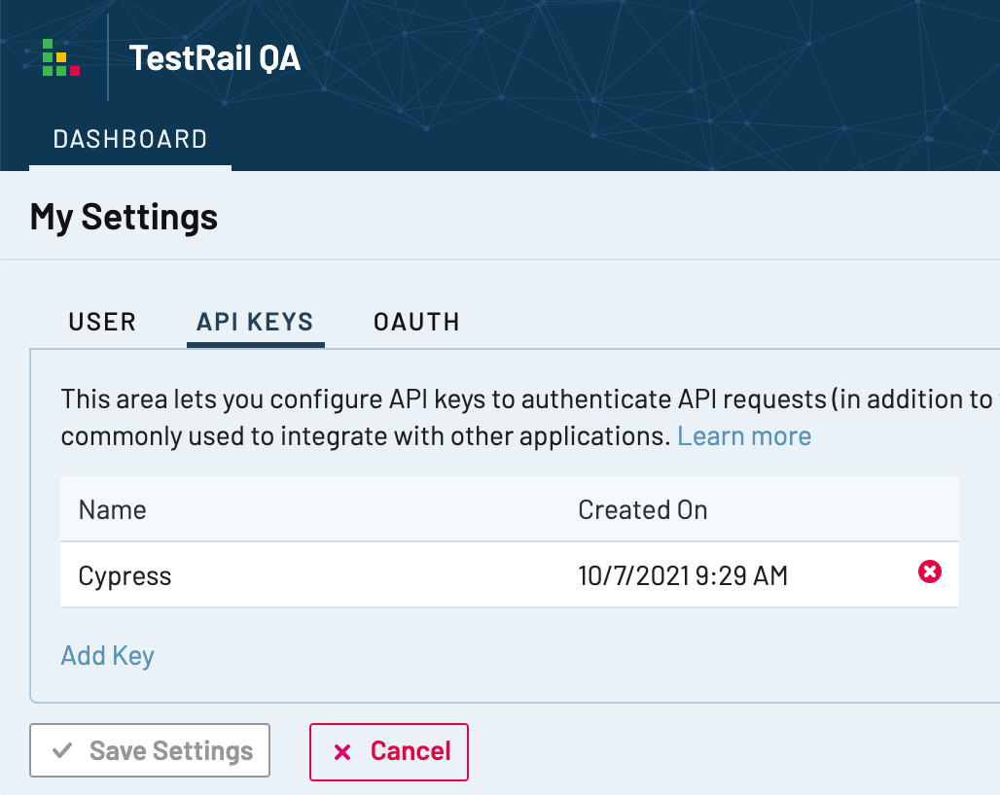
Create a test run
Typically, we would do the following to send the test results to TestRail
- create a new test run
- post test results for the run
- close the test run
Here is the first step: creating a new test run for a project "2" using an API call.
1 | curl -H "Content-Type: application/json" \ |
Tip: see the TestRail API docs here
The call returns a JSON object with the new test run's ID. All existing test cases will be included in the test run and will have the status "untested".
1 | curl -H ... |
The test run 57 has 3 test results to be reported.
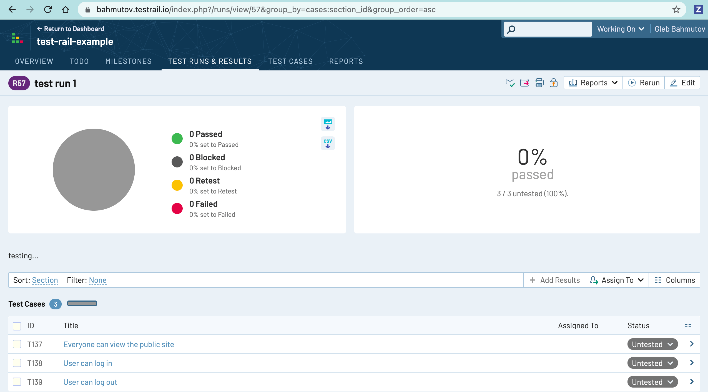
Reporting test results
We can report the test results by making API calls. For example, let's report all 3 test results at once as passing.
1 | curl -H "Content-Type: application/json" \ |
The TestRail Dashboard shows the passed test results, but the run is still open.
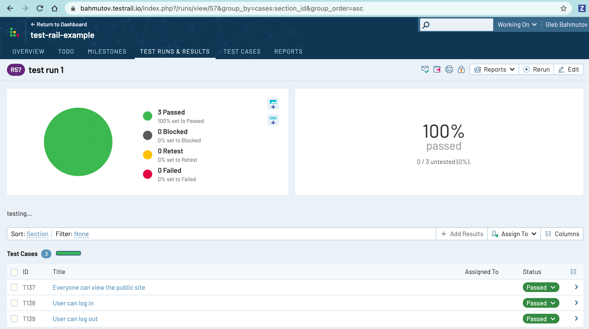
Closing the test run
All test results for the known test cases are in. We can fetch the test run stats to see them:
1 | curl -H "Content-Type: application/json" \ |
The properties "is_completed:false" and "untested_count:0" tells us all the test results are in, and we could close the test run.
1 | curl -H "Content-Type: application/json" \ |
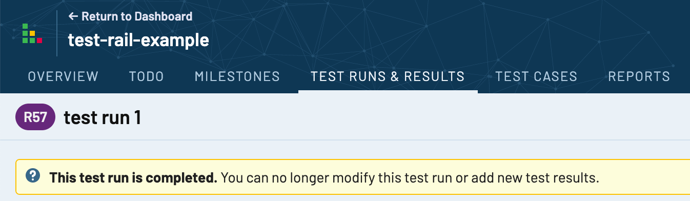
cypress-testrail-simple
Now let's start the new run, report the results, and close the run using GitHub Action workflow. We will report the results from the Cypress tests and perform these operations using the cypress-testrail-simple plugin. First, we need to install it.
1 | $ npm i -D cypress-testrail-simple |
The API calls from the Cypress Test Runner will be made from the plugin file. Thus add to your plugin file the following plugin registration line:
1 | // cypress/plugins/index.js |
🎁 You can find the complete project at bahmutov/test-rail-example
GitHub Actions
Let's first run and report our test results using GitHub Actions workflow using the official Cypress GH Action. Here is the workflow file .github/workflows/ci.yml
1 | name: ci |
- we install all dependencies using
cypress-io/github-actionwithout running the tests - we create a new TestRail run using a script included with
cypress-testrail-simple - the script command
runId=$(npx testrail-start-run ...)returns the id of the created test run - we pass the test run to the plugin while running the Cypress tests as an environment variable via GitHub expression syntax
TESTRAIL_RUN_ID: ${{ steps.testRail.outputs.runId }} - after the tests complete, we close the test run using the included script
npx testrail-close-run ${{ steps.testRail.outputs.runId }}. Note the important detail: we always call the close the run command, since the previous step running the Cypress tests might have failed.
To pass the TestRail settings to the plugin, we use repo secrets and environment variables.
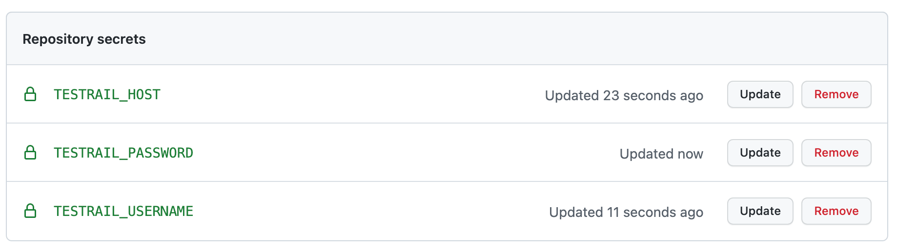
Tip: you can print verbose log messages from the cypress-testrail-simple plugin by running with an environment variable DEBUG=cypress-testrail-simple, see the Debugging section
GitHub Actions workflow explained
When the test runs, the new run with ID 60 is started. I used the commit message and SHA in the run's name and description by grabbing them from the GitHub environment variables
1 | commitSubject="${{ github.event.commits[0].message }}" |
We can see the output on GitHub
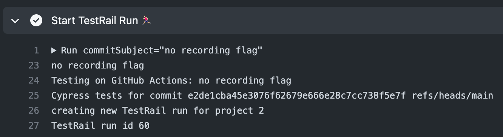
The Cypress plugin uses after:spec event hook to send the test results for tests with C\d+ pattern in their names. You can see the found tests in the terminal output:
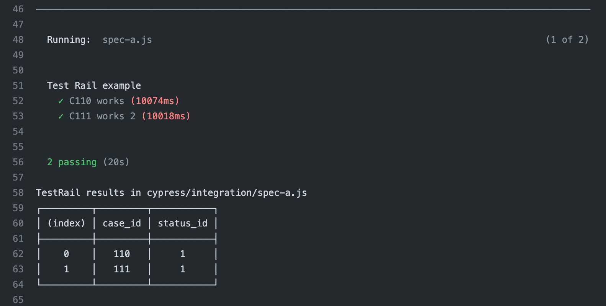
The Cypress Test Statuses are mapped to TestRail test status numbers. For example, the passed tests are send using status_id: 1.
After all tests are finished (assuming they ran on a single test container), we need to close the test run. We can use another script that comes with the cypress-testrail-simple plugin. We grab the run ID value from the output of the previous step that created the new run.
1 | - name: Close TestRail Run 🏁 |
Beautiful. The API call to close the run returns the final run stats, which are printed.
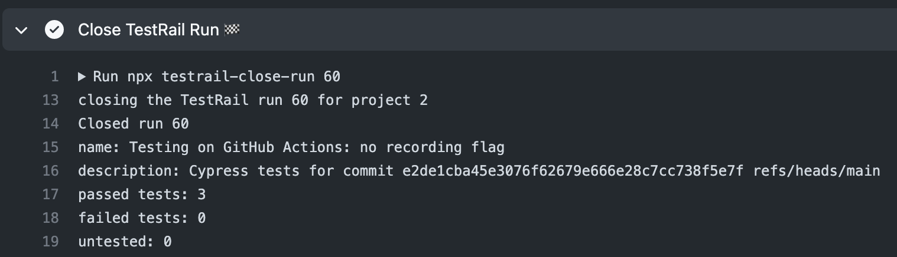
CircleCI
Let's run our project on CircleCI using the official cypress-io/circelci-orb. We want to run the tests in parallel, thus we need to set up the test recording on Cypress Dashboard. Next, we set up a new project on CircleCI and set the TestRail values using the environment variables. To simplify the setup, I am passing the TESTRAIL_PROJECTID: 2 as an environment variable.
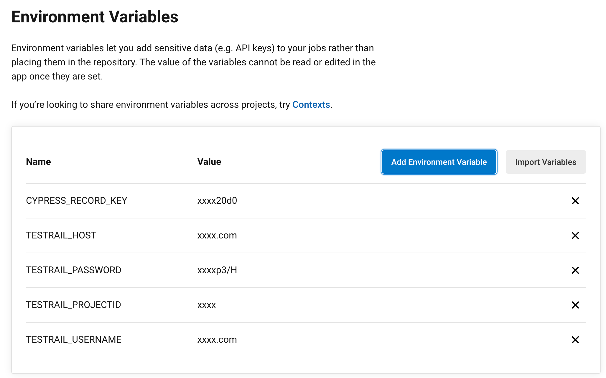
Here is our complete .circleci/config.yml file
1 | version: 2.1 |
CircleCI workflow explanation
When running on CircleCI we will install the dependencies using a single cypress/install job, then we will run the tests using several copies of the cypress/run job. The install job will start the new TestRail run, but we have a problem - CircleCI does not have a mechanism similar to the GitHub Actions for passing a value from one step to another one. Thus, we will simply write the created run ID into a file. That file will be included with all other files installed by the Install job in the workspace. That workspace is passed to the cypress/run jobs automatically. The cypress-testrail-simple plugin automatically reads the test run ID from the environment variable and from the file runID.txt.
1 | # every testing job needs to install dependencies and Cypress |
The run containers all use workspace, and each call "close the TestRail run" at the end. The script npx testrail-close-run is fine to run multiple times. It first checks if the test run has been closed already (maybe another test job has finished first). If the test run is still open, it checks how many test cases are in the status untested by checking the untested_count value. If all test cases have some result (passed or failed), then the test run can be closed.
1 | # cypress-testrail-simple automatically tries to read |
I think the above model of passing the test run ID and closing the run is flexible enough to satisfy most needs. If you do find something not working, or missing, please open an issue at bahmutov/cypress-testrail-simple.
Update 1: pick the test cases from spec files
Sometimes you want to run a subset of the tests, or the TestRail project might have only some of the test cases automated using Cypress (and the rest could be manual, or automated using another tool). By default, a new test run includes all test cases. You can limit the test cases in a run using the --spec option when starting a new test run. For example, let's run just the user tests from the cypress/integration/user-tests.js spec file:
1 | describe('User tests', () => { |
Each test title has its C\d+ case number. When starting a new test run, we can tell the script to look through the file source code, find these 2 test case IDs and create a test run using only those test cases.
1 | npx testrail-start-run --spec "cypress/integration/user-tests.js" |
Tip: the --spec allows glob parameters, thus you can pick multiple test files.
The test run will be closed when the two test case results are reported.
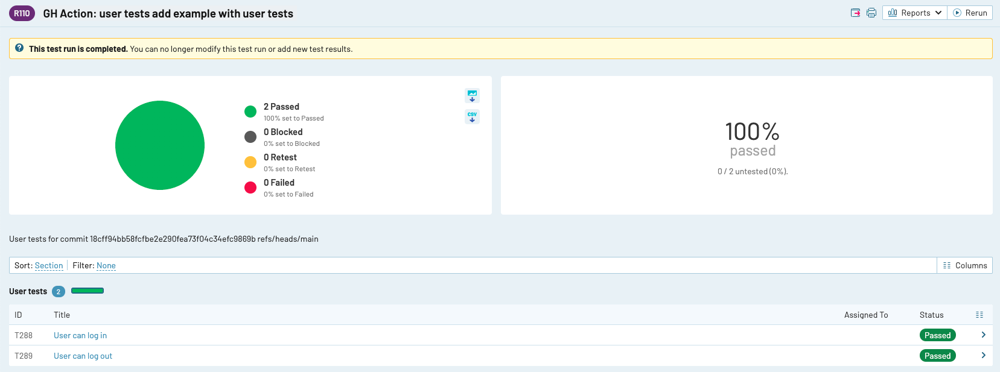